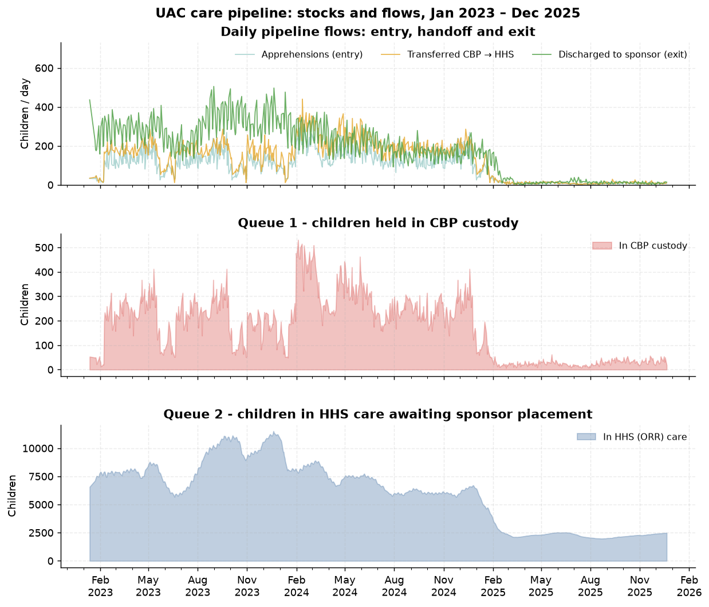

EDA, insights and recommendations, plus a live analytics dashboard covering care-pipeline flow, transfer & discharge efficiency, bottleneck detection and outcome trends.
Research paper (PDF) Research paper (HTML) Executive summary (PDF) Executive summary (HTML) Source repository Live dashboard Feedback videoTransfer Efficiency Ratio · Discharge Effectiveness Index ·
Pipeline Throughput · Backlog Accumulation Rate ·
Outcome Stability Score — all formulas published in
src/care_pipeline.py::METRIC_DEFINITIONS so paper, dashboard and
outputs/insights.json cannot drift apart.
